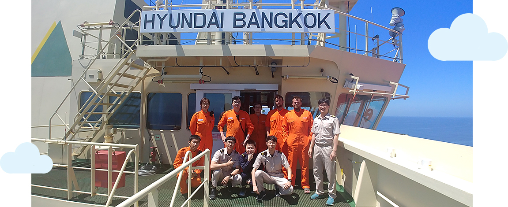
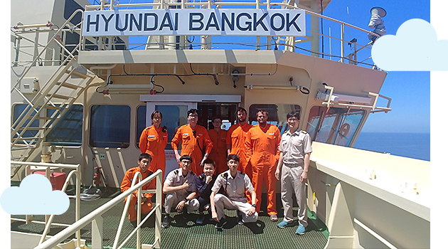
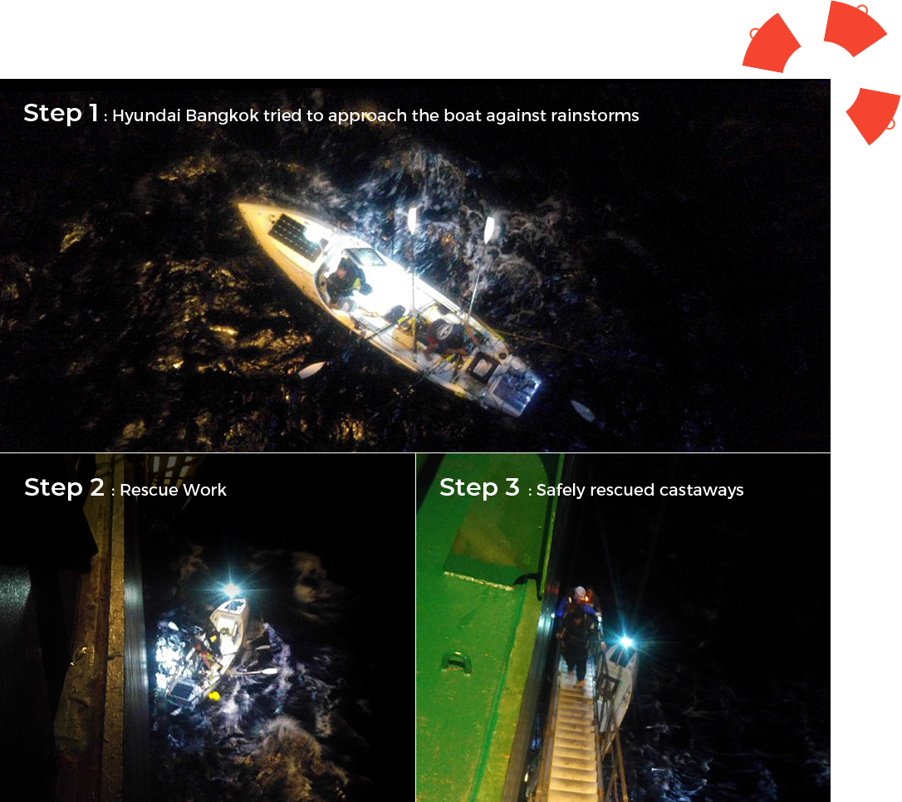
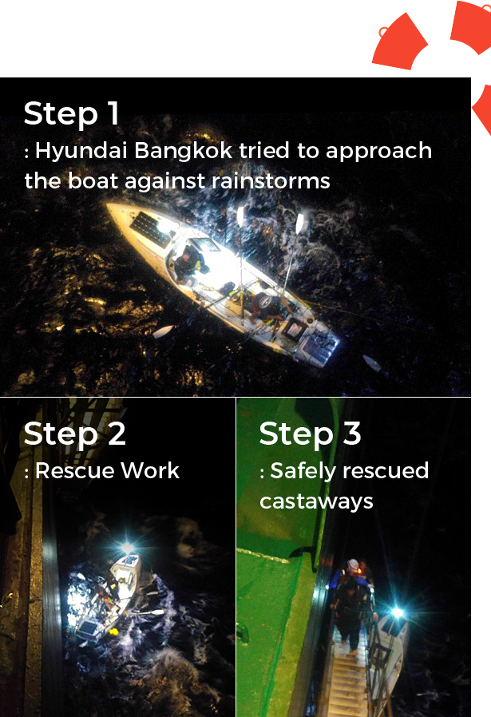

와 제 롤모델이 잡스에요!!! 아이폰 첫 출시되고 나서부터 계속 아이폰 쓰고 있는데 잡스가 너무 그리워요ㅠㅠ 지금은 돈만 벌려고 하는 것 같아서 디자인 발전도 없고ㅠㅠ와 제 롤모델이 잡스에요!!! 아이폰 첫 출시되고 나서부터 계속 아이폰 쓰고 있는데 잡스가 너무 그리워요ㅠㅠ 지금은 돈만 벌려고 하는 것 같아서 디자인 발전도 없고ㅠㅠ와 제 롤모델이 잡스에요!!! 아이폰 첫 출시되고 나서부터 계속 아이폰 쓰고 있는데 잡스가 너무 그리워요ㅠㅠ 지금은 돈만 벌려고 하는 것 같아서 디자인 발전도 없고ㅠㅠ와 제 롤모델이 잡스에요!!! 아이폰 첫 출시되고 나서부터 계속 아이폰 쓰고 있는데 잡스가 너무 그리워요ㅠㅠ 지금은 돈만 벌려고 하는 것 같아서 디자인 발전도 없고ㅠㅠ와 제 롤모델이 잡스에요!!! 아이폰 첫 출시되고 나서부터 계속 아이폰 쓰고 있는데 잡스가 너무 그리워요ㅠㅠ 지금은 돈만 벌려고 하는 것 같아서 디자인 발전도 없고ㅠㅠ
What’s Your Story
The Brave Crew of HMM
What’s Your Story
The Brave Crew of HMM
Seol, Keumhwan /
Chief Officer, Hyundai Bangkok
“Hyundai Bangkok” rescues US castaways in the Pacific Ocean
Last June 10, the HMM vessel Hyundai Bangkok, which was heading to US LA port, received emergency radio messages from the United States Coast Guard. The radio was to request help for two Americans who were nine miles away drifting on a boat about to be shipwrecked. Hyundai Bangkok changed direction towards the castaways and successfully rescued two Americans within 73 minutes from receiving the SOS signal. HMM Compass interviewed the Chief Officer of Hyundai Bangkok to hear his account.
Q1. Tell us more about the rescue mission.
At the time, it was easy to find the distressed boat by using our Automatic Identification System (AIS), but it was difficult to approach the boat due to 3-meter-high ocean waves caused by rainstorms with wind speeds at 28 knot per hour. We tried to send a rescue boat first, but this failed due to a violent storm and high waves. Instead, we decided to tie ropes on our bodies and approach the boat through gangway stairs. After several twists and turns, we finally got nearer to the boat and threw towing lines in order to link the lines between Hyundai Bangkok and the stranded boat.
We had to pay close attention on linking work, since the 7-meter-length boat was wobbling so much; it looked like a pirate ship at an amusement park. Of course, there was a dangerous moment as well, when the distance between our two ships grew wider due to vessel rolling. As a result, we were very lucky to be able to safely rescue the people.
 
Q2. You said the rescue work was dangerous. What were you thinking duringthe rescue work?
There was only one thought and that was, we had to hurry to rescue the people. At first, we were shocked, but soon came to our senses and worked as a team to quickly help the castaways.
Q3. What was the key factor in rescuing the people safely?
We were able to perform the successful rescue because all of our crew focused on their individual missions, in contributing to a combined team effort. We have, of course, taken safety courses, but it was also our day-to-day experience working in similar fashion that gave us the confidence and ability to perform the rescue.
For example, the work linking two ships by using towing lines was similar to the work at the Suez Canal which involved linking a mooring boat to a mother vessel. Most crew members of the Hyundai Bangkok had experience the Suez Canal work and easily understood the approach to link a wrecked boat to the Hyundai Bangkok.
Q4. Any special episodes from the rescue that you’d like to share?
As soon as we rescued the two Americans onto our vessel, we checked their vitals first. They looked fine, but it was difficult to check the blood pressure of one of them, as his forearms were too thick to use the automatic blood pressure measuring instrument. Instead, the instrument malfunctioned and showed that his blood pressure had dramatically dropped. We were all in a bit of gaze, but soon laughed together at his joke, “Am I going to die?”. We also provided a warm change of clothing, but the clothes were far too small to fit both the Americans, and we had to help them squeeze into the clothes causing much laughter again.
As crewman of the Hyundai Bangkok, we were so grateful not only to have performed the rescue safely, but also ourselves be able to return to our families safely.


-
Great
322
-
Like
322
-
Sad
322
-
So-so
322
-
Angry
322